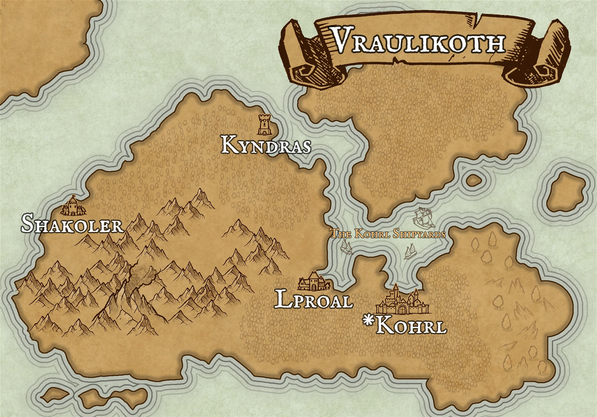

-
Kohrl
Population: 1,607,000
Description: The capital of Vraulikoth and the location of the largest shipbuilding project in Azasos. Kohrl is built on a large protected bay that makes for excellent docks to store ships. The narrow straits on either side of the kohrl shipyards makes it easy to protect the shipyards. -
Kyndras
Population: 646,000
Description: Located up the western strait from the capital, Kyndras oversees the protective measures that ensures the protection of the kohrl shipyards. It also takes in trade from Lireon and Khare. -
Lproal
Population: 419,000
Description: The sister city to Kohrl, lproal has a very large lumber industry that fuels the shipbuilding industry in Kohrl. -
Shakoler
Population: 759,000
Description: A port city on the western coast of Vraulikoth that connects Vraulikoth to the west.

Hover over the name of each city to view a brief paragraph on it.
Brief History
Vraulikoth is home to best ship-builders in Azasos. Their engineers have designed ships for sorts of purposes, but they excel in designing warships. They have made designs for larger vessels, capable of withstanding fire from opposing Myst-casters by using thin metal plates on a lot of the deck. They also design sleeker vessels that can maneuver easily and deliver their payload of archer barrages, Myst-caster artillery or landing parties, effectively. Vraulikoth allied itself with Khare once the queen was killed, but left the conflict shortly after.
Language
Vraul, the national language of Vraulikoth is very consanant heavy and is easily spoken by the inhabitants, but can be quite difficult to master for non-native speakers. The written language is very similar to central languages, but is written from right to left.